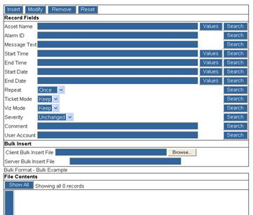

This file contains records that direct the system to suppress, modify, or annotate alarms for alarms that match the selection parameters. The blackout rules are commonly used in the case of system maintenance or other situations that require a filter rule.

Figure 10.7 – Filter File
Key field descriptions are provided in the following table.
Table 10.6 – Filter File Key Fields
|
Key Fields |
Description |
|
Asset Name |
the full name of an asset or a regular expression describing multiple assets: e.g., b01234.* - common regular expressions meta characters allowed: $ ^ [ ] .* |
|
Alarm ID |
the full alarm id or a regular expression describing multiple alarms - only alarms known to the correlation system have alarm ids |
|
Message Text |
the full message text or a sub string of it - no regular expressions are recognized except for the use of .*: Threshold.*cycles |
|
Start Time |
the start time (HH:MM) of this operation |
|
End Time |
the end time (hh:mm) of this operation |
|
Start Date |
the start date (YYYY.MM.DD) of this operation |
|
End Date |
the end date (YYYY.MM.DD) of this operation |
|
Repeat |
the repeat mode - for daily, weekly, and monthly modes, the start and end times specify the initial time interval |
|
Ticket Mode |
the ticketing mode - drop drops ticketing, keep sends the alarm through the correlation engine |
|
Viz Mode |
the visualization mode - keep will allow the record to appear in query results |
|
Severity |
the severity level |
|
Comment |
a comment to add to any alarm that matches these parameters |
|
User Account |
the website account that established this filter rule |
|
Bulk Insert File |
a file with records to insert to the main file - must be in the same format as the main file |